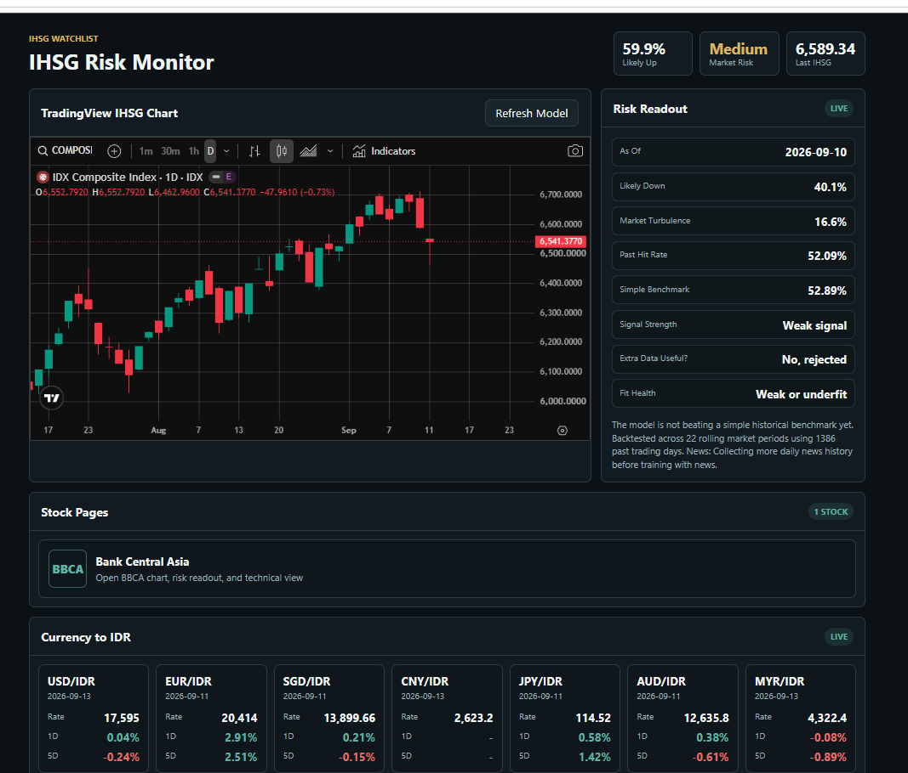

Project details
IHSG-Risk Monitor
A web dashboard for monitoring Indonesia’s stock market (IHSG), combining interactive charts, model-based risk indicators, and exchange-rate data in one place.

My Role & Contributions
Sole developer responsible for the frontend, backend, and machine-learning workflow, using AI-assisted development throughout the project.
- Frontend
- Built the dashboard and BBCA stock page with interactive TradingView charts, API-driven risk readouts, technical indicators, and exchange-rate displays.
- Backend & data
- Integrated Yahoo Finance market data and RSS news feeds through a Python HTTP API, with cached responses, headline filtering, and daily news-feature aggregation.
- Model development
- Implemented regularized logistic regression with NumPy and engineered features from returns, volatility, moving averages, RSI, MACD, and trading volume.
- Evaluation
- Added chronological walk-forward backtesting, baseline comparisons, and fit diagnostics to examine model performance and communicate weak signals.
Languages & Technologies
- Languages
- Python, JavaScript, HTML, CSS
- Backend
- Python standard library: ThreadingHTTPServer, urllib, and XML parsing; JSON API responses.
- Machine learning
- NumPy; custom L2-regularized logistic regression and technical-feature calculations.
- Frontend
- Vanilla JavaScript, HTML, CSS, and embedded TradingView charts.
- Data sources
- Yahoo Finance chart data and financial-news RSS feeds.
Problem & Approach
The project explores whether historical market data can provide useful next-day direction estimates while bringing IHSG charts, risk indicators, news, and exchange rates into one local-first dashboard.
- Challenge
- Financial signals are noisy, and additional features can increase complexity without improving results. News also needs enough historical coverage before it can be evaluated.
- Approach
- Used regularization and time-ordered validation, compared base and expanded feature sets, and gated news-feature use on sufficient history and validation results.
- Current limits
- The captured dashboard reports a weak signal and no improvement over its displayed historical benchmark. This is an experimental monitoring project, not a validated trading system.